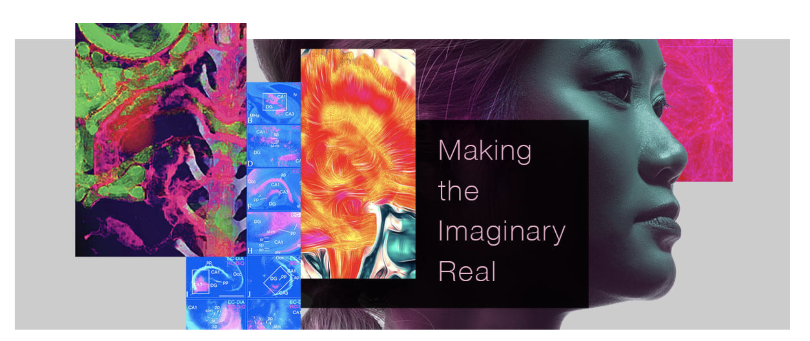
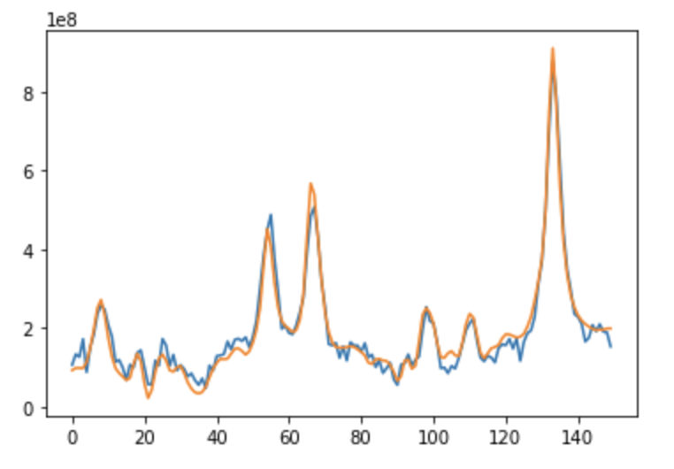

Overview
First of all, for a brief overview of my project,
here's my final presentation of the internship.
It might be a little difficult to understand because it's so sciency, so I explain what's up in
this guide.
The rest of this page describes what I've learned from this experience, and I also have some cool interactive visualizations down below!
The rest of this page describes what I've learned from this experience, and I also have some cool interactive visualizations down below!
Learning Curve
When I first started in June, I had no idea what MRSI was, and I only knew how to train a model using
a Google AutoML's graphical interface. I had to get grinding.
Special thanks to these online resources for basically saving me:
- A Convolutional Neural Network to Filter Artifacts in Spectroscopic Magnetic Resonance Imaging
- Questions and Answers in MRI website
- Deep Learning Illustrated
And now, here's a big list of the things I've learned. Contact me if you want some more details.
- how to read binary data from a file
- big vs. little endian
- Python libraries: numpy, scikit-learn, pandas, tensorflow & keras, matplotlib, plotly
- data visualizations (scroll down to play with them!)
- Keras Sequential & Functional API
- Fourier Transformations -- fft, fft shifts, apodization
- How to present 2 months of work in < 3 mins
Special thanks to these online resources for basically saving me:
- A Convolutional Neural Network to Filter Artifacts in Spectroscopic Magnetic Resonance Imaging
- Questions and Answers in MRI website
- Deep Learning Illustrated
And now, here's a big list of the things I've learned. Contact me if you want some more details.
- how to read binary data from a file
- big vs. little endian
- Python libraries: numpy, scikit-learn, pandas, tensorflow & keras, matplotlib, plotly
- data visualizations (scroll down to play with them!)
- Keras Sequential & Functional API
- Fourier Transformations -- fft, fft shifts, apodization
- How to present 2 months of work in < 3 mins
Reconstruction - The Side Project
I'd actually finished 80% of my main project by the first month. Dr. Li sent me a paper about reconstruction.
Ok, really really quick explanation of MRSI reconstruction -- when the scanner scans something, it's time-based. There is a long, complex pipeline taken to convert the time-based data into MRSI frequency-based data. Sometimes, this complex pipeline can accidentally introduce artifacts. The pipeline is like:
So, the question here is "can we use machine learning to replace the MRSI reconstruction pipeline?" The quick answer is maybe. I did end up training a model that did the reconstruction from the time/freq FFT step to the final output step. Here's a picture of my result:
The blue line is the predicted result and the orange line is the actual final output. They overlap pretty closely. However, the dataset that I had was extremely tiny, so I'm not sure whether the model overfit. Then, I had to resume my artifact filtering project because I'd just gotten a bunch of new data. However, I'd love to continue this project in the future to see if I can substitue MRSI reconstruction with ML.
Ok, really really quick explanation of MRSI reconstruction -- when the scanner scans something, it's time-based. There is a long, complex pipeline taken to convert the time-based data into MRSI frequency-based data. Sometimes, this complex pipeline can accidentally introduce artifacts. The pipeline is like:
raw MRSI data -> file type conversion ->
spatial FFT -> time/freq FFT -> phase correction -> channel combination -> final output!
So, the question here is "can we use machine learning to replace the MRSI reconstruction pipeline?" The quick answer is maybe. I did end up training a model that did the reconstruction from the time/freq FFT step to the final output step. Here's a picture of my result:

The blue line is the predicted result and the orange line is the actual final output. They overlap pretty closely. However, the dataset that I had was extremely tiny, so I'm not sure whether the model overfit. Then, I had to resume my artifact filtering project because I'd just gotten a bunch of new data. However, I'd love to continue this project in the future to see if I can substitue MRSI reconstruction with ML.
Visualizations
As promised, here are some fun data visualizations I created along the way. These were
made for myself, mainly to make sure I was reading in the data correctly. Although, it did make some interesting plots.
This data here is phantom data. This phantom data is basically a water droplet that contains the same metabolites as an actual brain. The reason why I can't actually include real brain data in here is because I'd be sending out private patient brain data, which is against UCSF policy.
This plot demonstrates that MRSI data actually consists of 4 dimensions: 3 spatial and 1 time/frequency. As you move the slider, you can see how the color, or frequency, for each dot, or voxel, change. You can kind of see the shape of the phantom water droplet inside of the plot.
This second plot simply shows you each slice of the brain, and it's fixed at a particular frequency.
This data here is phantom data. This phantom data is basically a water droplet that contains the same metabolites as an actual brain. The reason why I can't actually include real brain data in here is because I'd be sending out private patient brain data, which is against UCSF policy.
This plot demonstrates that MRSI data actually consists of 4 dimensions: 3 spatial and 1 time/frequency. As you move the slider, you can see how the color, or frequency, for each dot, or voxel, change. You can kind of see the shape of the phantom water droplet inside of the plot.
This second plot simply shows you each slice of the brain, and it's fixed at a particular frequency.
Conclusion
Despite the ongoing pandemic, I really enjoyed this summer because of this internship.This internship was one
of the most challenging and rewarding experiences I've ever been through, pushing me to learn about radiology
and machine learning is such a short period of time. I was very fascinated with the MRSI data I got to process,
and the challenges that I faced were exciting rather than frustrating. I'm definitely interested in continuing
to learn about machine learning and applying these technologies to the health industry!